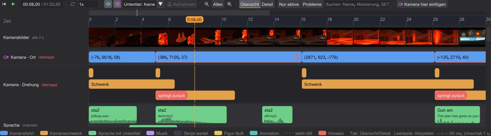
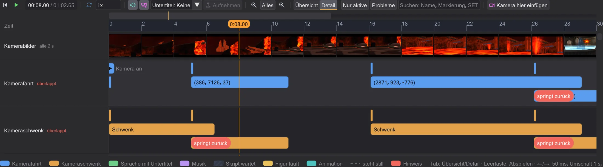
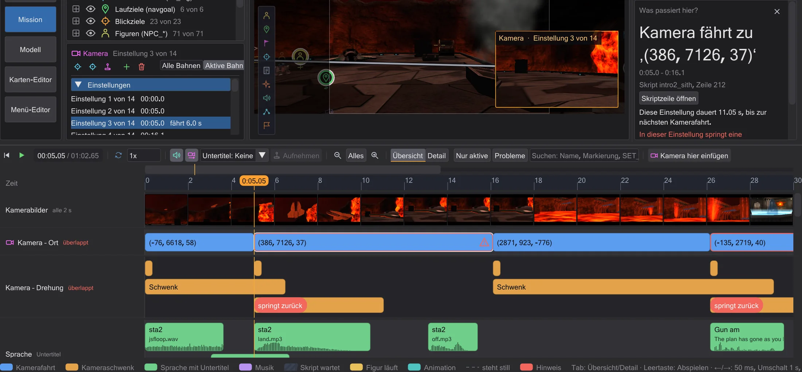
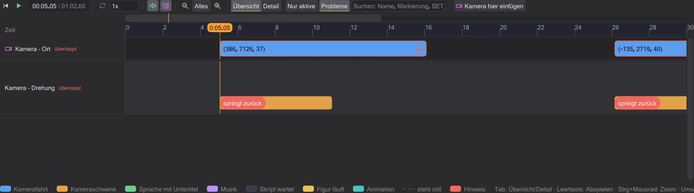
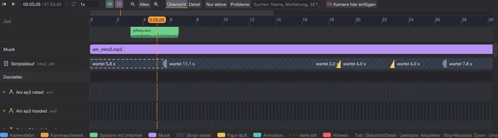

Zeitleiste
Die Zeitleiste spielt die Szene ab und zeigt, wann was geschieht - Kameraeinstellungen mit Namen, Sprache mit Untertitel, Musik, die Wartezeiten des Skripts und jeden Darsteller. Ein Klick auf einen Block erklärt ihn in der Seitenleiste; Ziehen ändert das Skript.

Abspielen und Bewegen#
Der Abspielknopf (▶) unter der Karte startet und hält an; steht die Maus über der Zeitleiste, tut Leertaste dasselbe. Auf das Lineal klicken oder ziehen stellt die Zeit - die 3D-Ansicht zeigt die Szene in diesem Augenblick. Links / Rechts gehen ein Spielbild (50 ms, das Raster der Spiellogik) weiter, mit Umschalt eine Sekunde, mit Strg fünf Sekunden, Pos1 springt an den Anfang. Die Legende unter den Zeilen nennt diese Tasten. Das Tempofeld verlangsamt die Szene (Ton nur bei 1x), Schleife wiederholt sie.
Eine Szene beginnt mit einem Ausschnitt von etwa 30 Sekunden. Alles zeigt die ganze Szene, − und + zoomen heraus und hinein, Strg+Mausrad zoomt um den Mauszeiger, Umschalt+Mausrad rollt. Nur wenn hineingezoomt ist, zeigt eine schlichte Navigationsleiste über dem Lineal, welchen Teil der Szene du siehst - klicken oder ziehen verschiebt dorthin.
Ton wie im Spiel#
Die Vorschau spielt die Klänge der Szene so, wie das Spiel es tut. Gehört wird von der Kamera aus, die die Ansicht zeigt - beim Abspielen von der Skriptkamera. Jeder Klang wird jedes Bild nachgeregelt: fährt die Kamera weg, wird er leiser, schneidet sie an einen anderen Ort, wird hörbar, was dort ist. Ein Satz, der außer Hörweite begann, läuft still weiter. Wie im Spiel summen Schwerter, laufen Lautsprecher, klingen Türen und Effekte nur, wenn die Kamera die Quelle sehen könnte (ihr PVS); Stimmen, ROFF-Notizklänge und Zerbrechendes hört man immer. Eine unsichtbare Figur zündet ihr Schwert nicht hörbar - der Zündklang kommt, wenn sie erscheint. Die Lautstärken folgen den Vorgaben des Spiels (Effekte 0,5, Stimmen 1,0, Musik 0,25) und lassen sich unter Bearbeiten → Einstellungen ändern. Ton gibt es nur bei 1x.
sound auf einer Figur bleibt unter den Regeln von Movie Duels am Startort und geht unter OpenJK mit der Figur mit (Einstellungen). Unter den Regeln von OpenJK feuert jede Notiz eines ROFF-Bilds (Movie Duels und Jedi Outcast nur die erste), und loop sfx <Klang> gibt der Entity einen Schleifenklang bis loop sfx kill; eine Notiz USE <Skript> startet dieses Skript auf der Entity, und loop rof absolute|relative startet die Bahn wie im Spiel neu (die Aufgabe des play endet dann nie, ein dowait darauf wartet ewig).Übersicht und Detail#
Übersicht zeigt die Szene auf einen Blick: Kamera – Ort hat je Einstellung einen Block, von einer Kamerafahrt zur nächsten, benannt nach ihrer Markierung (oder als lesbare Koordinaten); Kamera – Drehung zeigt die Schwenks, ein Schwenk ohne Dauer ist als Schnitt markiert. Sprache zeigt jeden Satz so lang wie seine Sounddatei, mit Sprecher, Untertitel aus den Textdateien des Spiels (Jedi Academy und Movie Duels: strings/english/<Karte>.str, Jedi Outcast: strip/<Karte>.sp, samt der Zusatzpakete mancher Karten) und Wellenform. Musik zeigt, welche Musik ab wann läuft. Skriptablauf zeigt die Wartezeiten des Skripts als schraffierte Blöcke mit dem, worauf sie warten, und seine Befehle als beschriftete Marken; ein Kartenwechsel ist eine rote Marke. Jeder Darsteller hat eine Zeile: oben die aussagekräftigen Animationen mit Namen, unten seine Läufe, nummeriert, gestrichelt, wo er still steht, schraffiert, wo er nicht zu sehen ist. Der Pfeil am Namen klappt Animation und Befehle auf.

Detail (oder Tab über der Zeitleiste) teilt die Kamera in Fahrt, Schwenk, Zoom und Blende und zeichnet Sichtfeld und Blende als Linien. Zwischen zwei Befehlen sind sie gerade, weil das Spiel linear rechnet - Ease-Kurven gibt es nicht. Beginnt eine Kamerabewegung, bevor die vorige derselben Art fertig ist, bekommt sie eine eigene Bahn und den roten Hinweis springt zurück: das Spiel übernimmt Ort und Winkel erst am Ende einer Bewegung (cg_camera.cpp), die neue rechnet deshalb von dort, wo die vorige begann - die Kamera springt zurück.
Was passiert hier?#

Einen Block oder eine Marke anklicken: die Zeit springt dorthin, seine Zeile wird im Skript gewählt, und unter der Skriptspalte sagt der Kasten Was passiert hier? in normaler Sprache, was er tut - wohin die Kamera fährt und wie lange, wer welchen Satz spricht, worauf ein wait wartet und wer dieses Signal sendet, welche Animation wie lange läuft. Skriptzeile öffnen öffnet den Befehl im Editor. Ein Befehl aus einem anderen Skript (run, use, spawnscript) nennt dieses Skript und seine Zeile dort - Skriptzeile öffnen öffnet jenes Skript und wählt die Zeile; einer, den der Nachbau eingefügt hat, hat keine Zeile.
Filter und Suche#
Nur aktive blendet Darsteller aus, die im sichtbaren Ausschnitt nichts tun. Probleme zeigt nur Stellen mit Hinweisen: Kamerafahrten, die zurückspringen, Befehle, die die Vorschau noch nicht nachbildet, den Kartenwechsel. Das Suchfeld filtert nach Name, Markierung, Datei, Untertitel oder Befehl (etwa luke, cam1b, SET_ANIM).

Zeit durch Ziehen ändern#
Einen Kamerablock oder einen Satz nach links oder rechts ziehen: das wait davor ändert sich, er kommt früher oder später, und alles danach rückt mit; mit Alt wird das wait danach um dasselbe kürzer, und der Rest bleibt stehen. Die rechte Kante eines Kamerablocks ziehen ändert seine Dauer, die rechte Kante eines Wartens macht es länger oder kürzer. Ein Satz behält seine Länge - sie ist die Länge der Sounddatei. Einen Lauf kann man nicht länger oder kürzer ziehen: seine Dauer kommt aus der Wegsuche und dem Tempo der Figur. Alles rastet in die 50-ms-Bilder des Spiels ein, und während des Ziehens sagt ein Hinweis, was sich im Skript ändert.

Jedes Ziehen schreibt den Wert ins Skript (Kommentare und Formatierung bleiben) und ist genau ein Schritt für Strg+Z - danach ist das Skript Byte für Byte wie vorher.
wait endet ein Spielbild (50 ms) später als geschrieben, und ein dowait wartet auf die genannte Aufgabe. Ein Befehl, den die Vorschau noch nicht nachbildet (etwa camera ( TRACK ) oder print), steht als rote Marke da, statt geraten zu werden. Es gelten die Regeln von OpenJK oder Movie Duels, wie unter Einstellungen eingestellt.